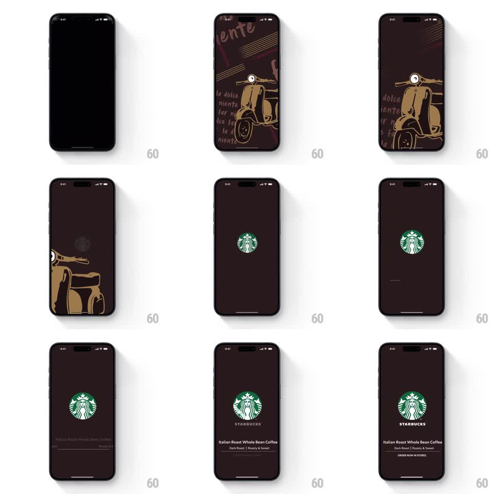

Media
Frame-by-frame

Rebuild this animation 1:1: Starbucks' Italian splash - a hand-drawn Vespa and scribbled "dolce far niente" notes on dark espresso brown slide away as the siren logo fades in, followed by the Italian Roast details.

Rebuild this animation 1:1: Starbucks' Italian splash - a hand-drawn Vespa and scribbled "dolce far niente" notes on dark espresso brown slide away as the siren logo fades in, followed by the Italian Roast details.
## Integration
Integration: stack-agnostic spec - springs given as stiffness/damping, timed motions as duration + curve; map every value to your framework and animation library of choice.
## Scene
Dark espresso-brown field covered in a beige line illustration: a Vespa scooter at center, handwritten phrases ("la dolce", "niente", "far niente") scattered, spaghetti-line doodles above. End state: clean dark-brown screen, green siren at center, STARBUCKS wordmark, "Italian Roast Whole Bean Coffee", "Dark Roast | Roasty & Sweet", "ORDER NOW IN STORES".
## Motion spec
Pattern: illustration exit with a logo fade and staggered lockup.
- The illustration fades in from black (400ms) with the Vespa drawing itself (stroke draw, 800ms) and the handwritten notes fading in one by one (200ms each, 100ms apart).
- The Vespa then drives down-left off screen (translate + slight rotation, 600ms, ease-in) while the notes and doodles fade out (300ms).
- The siren fades and scales in at center (opacity 0 -> 1, scale 0.85 -> 1, 400ms, ease-out).
- Wordmark and product lines stagger in below (fade + rise 8pt, 250ms each, 120ms apart).
## Calibration
- The scooter's exit has personality: a smooth roll, not a teleport - like it drives away.
- The brown never changes; only the artwork leaves.
## Reduced motion
Illustration crossfades to logo stage (400ms); texts fade together.
## Don't miss
- The illustration is line art (beige on brown) - no fills.
- Keep the handwritten copy legible during its brief life; it is the theme's voice.